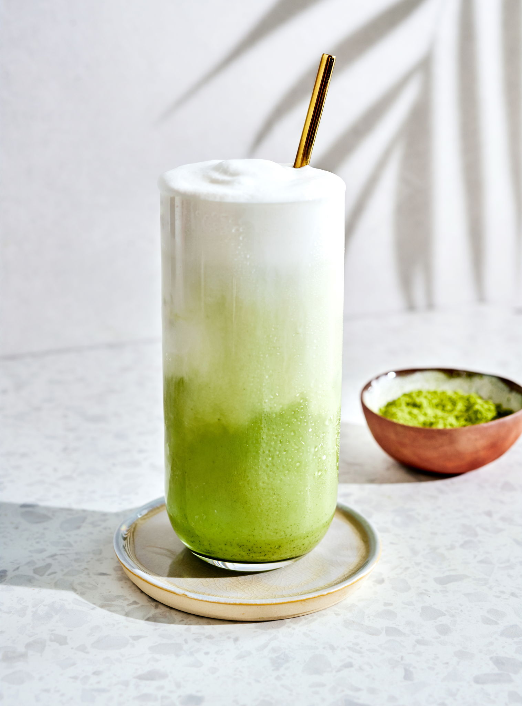

Recette du Matcha Latte

Ingrédients :
Préparation :
- Tamisez la poudre de matcha dans un bol pour éviter les grumeaux.
- Ajoutez l’eau chaude et fouettez vigoureusement en formant un W jusqu’à obtention d’un liquide mousseux.
- Faites chauffer le lait (ou utilisez-le froid pour un latte glacé).
- Ajoutez le miel ou le sirop d’érable si désiré.
- Versez le matcha dans une tasse ou un verre.
- Ajoutez le lait doucement sur le matcha.
- Mélangez doucement et servez chaud ou avec des glaçons pour une version glacée.
Retour à l'accueil